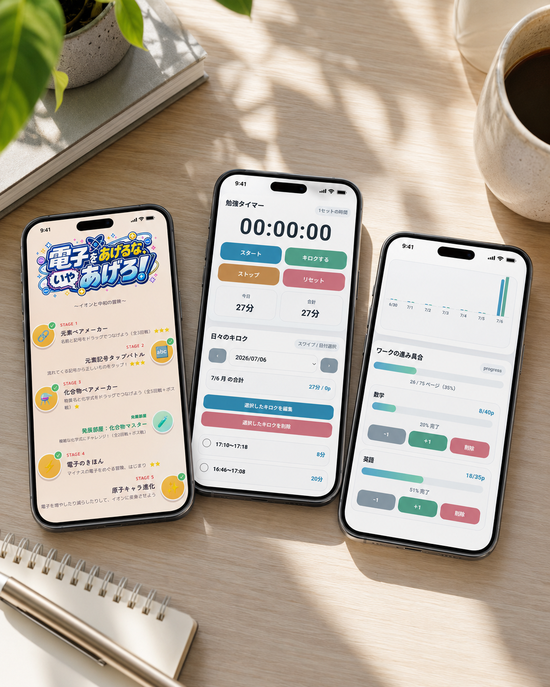
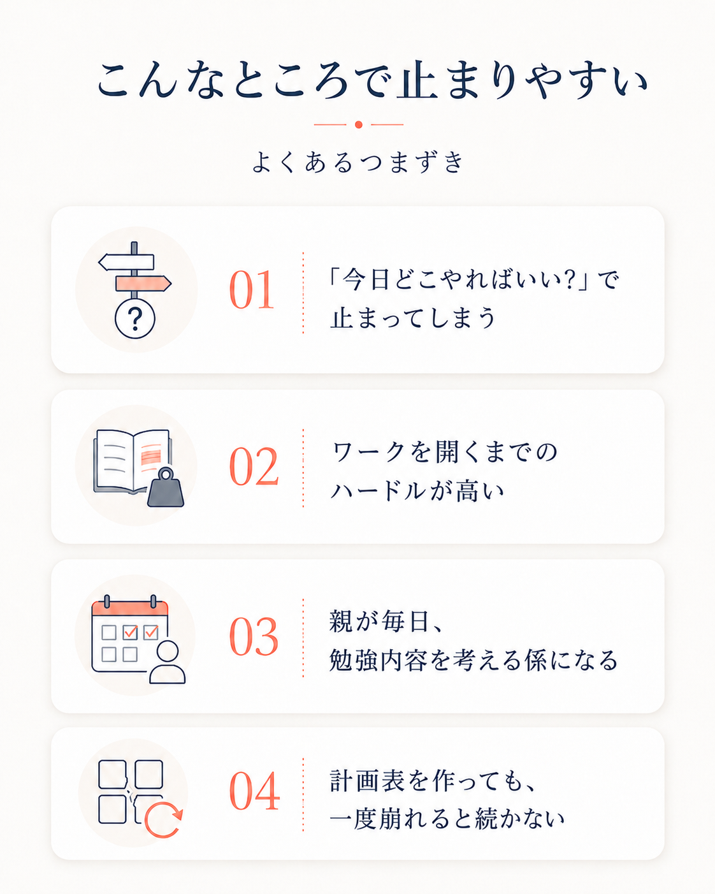
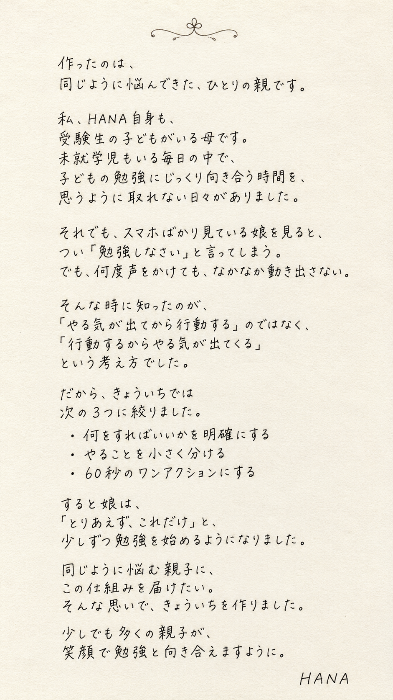
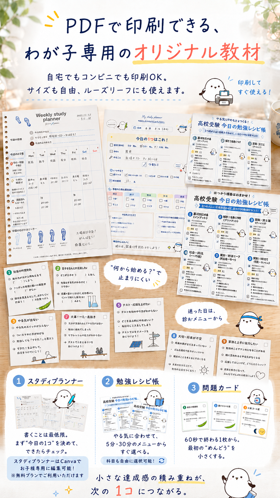
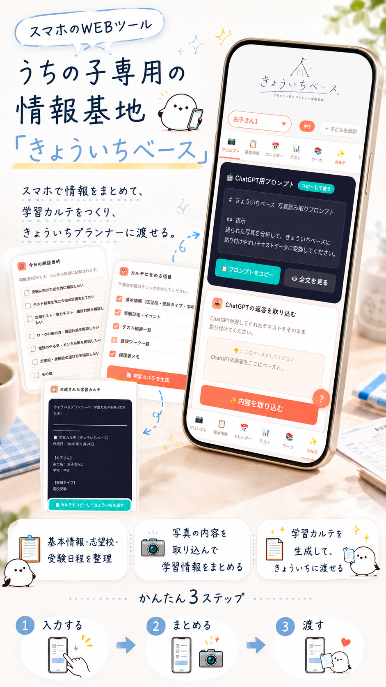
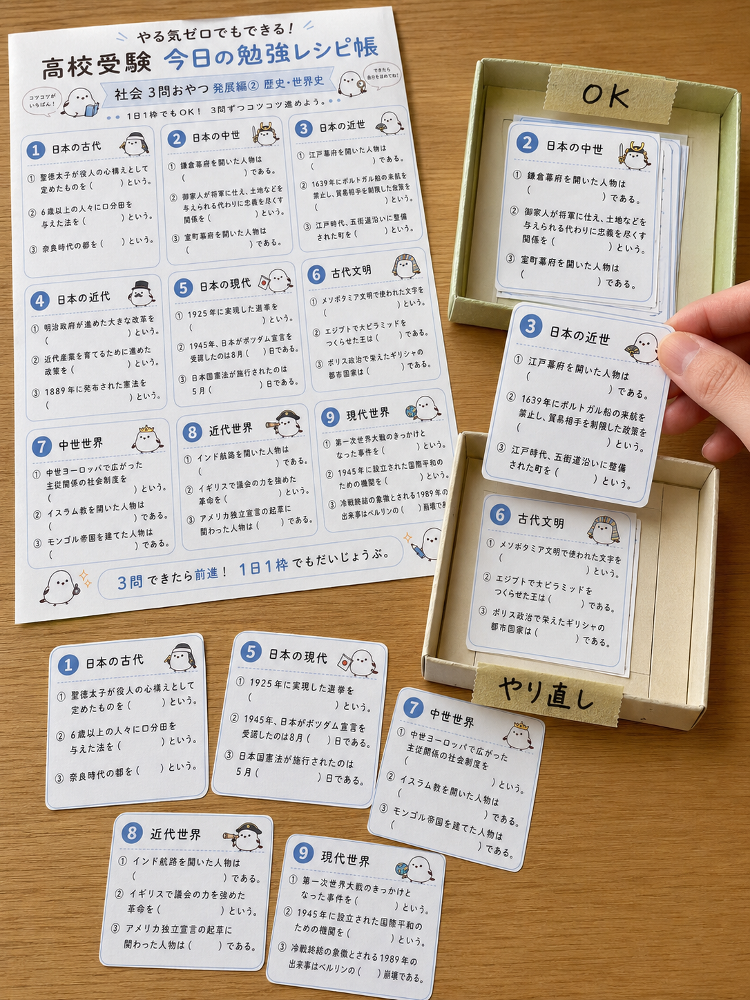
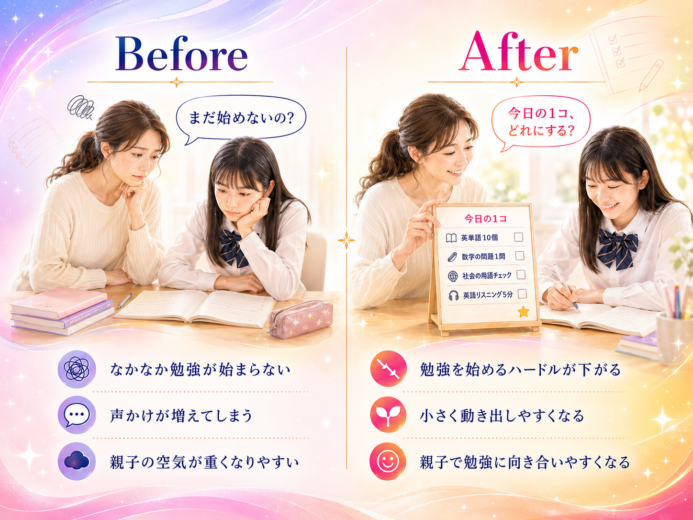

何をすればいいかを明確にする
「勉強しなさい」と言われても、子どもには何を、どこから、どれくらいやればいいのかが見えていないことがあります。
だから、きょういちでは「今日はこれ1コ」と、行動を具体的にします。迷う時間を減らし、始めるまでのハードルを下げるためです。

紙・AI・音楽・動画で、最初の一歩を軽くする。
やる気を待つ前に、入口を小さくする。きょういちプロジェクトは、親子が今日やることを迷わず選べる、明るい家庭学習セットです。
TODAY
今日の1コ
01 / こんな悩みはありませんか？

きょういちは、この「始める前の重さ」を小さくするために作りました。
02 / HANAについて

03 / なぜ、この3つなのか
では、なぜ「今日の1コ」が動き出しやすさにつながるのか。きょういちが大切にしているのは、子どもに根性で頑張らせることではありません。
勉強を始める前にある「何をすればいいか分からない」「やることが多すぎる」「ワークを開くのがめんどくさい」という心理的な重さを、できるだけ小さくすることです。
「勉強しなさい」と言われても、子どもには何を、どこから、どれくらいやればいいのかが見えていないことがあります。
だから、きょういちでは「今日はこれ1コ」と、行動を具体的にします。迷う時間を減らし、始めるまでのハードルを下げるためです。
ワーク1冊、テスト範囲全部、受験勉強全体。そう見えると、ゴールが遠すぎて、動く前から疲れてしまいます。
でも、やることを小さく分けると「今日はここだけ」「今はこの位置」「次はこれ」が見えるようになります。大きな山ではなく、足元の一歩を見えるようにする。それが、きょういちの考え方です。
やる気が出るまで待つと、なかなか始まりません。でも、ワークを開く。1問だけ解く。今日のページに印をつける。そんな小さな行動なら、気分が乗っていなくても始めやすくなります。
動き出すと、気持ちが少し変わる。「もう1問だけやろうかな」と思える日も出てくる。
きょういちは、その最初の60秒を作るための教材です。
学習心理の面から見ても、「小さく始める」ことには意味があります。
目の前にやることが多すぎたり、何から始めるかが曖昧だったりすると、子どもの頭の中では認知負荷が高くなります。
認知負荷とは、頭の中で処理しなければならない情報の重さのこと。ワーク1冊、テスト範囲全部、受験勉強全体。それらが一気に見えると、ワーキングメモリがいっぱいになり、勉強に入る前にフリーズしやすくなります。
だから、きょういちは「やる気を出させる」より先に、始める前の負担を小さくすることを大切にしています。
何を、どこから、どれくらいやればいいのか。その判断が多いほど、勉強の前に疲れてしまいます。だから「今日はこれ1コ」と行動を具体的にします。
ワーク1冊では重く見えても、「今日の1ページ」「まず1問」まで小さくすれば、最初の一歩が見えます。大きな山ではなく、足元の一歩を見えるようにします。
勉強を始めるには、決める・順番を考える・気持ちを切り替える・始める、という力が必要です。きょういちは、毎回ゼロから考える負担を減らし、行動を始めやすくします。
小さく始めて、少しできた。その感覚は「自分にもできそう」という気持ちにつながります。できた感覚を残すことが、次の一歩を支えます。
やる気が出るまで待つのではなく、まず60秒だけ動いてみる。ワークを開く、1問だけ解く、その小さな行動が気持ちを動かすきっかけになります。
04 / 内容
noteで紹介されている内容を、購入前に見比べやすい形で整理しました。
今日の1コ、できたか、ひとことメモ。書くことを最低限にしたPDF教材。
5分だけの日、30分いけそうな日、しんどい日に合わせて入口を選べます。
ペラッと1枚取って、1問だけ。ワークを開く前の負担を軽くします。
ページ数と使える日数から、最低限どれだけ進めるかを見える化。
志望校、テスト日程、ワーク情報、学習状況をまとめるスマホWebツール。
GPTsのAI伴走コーチが、今日の気分や進捗から1コを一緒に決めます。


05 / 火種
きょういちには、机に向かう前の気分を上げるテーマソング「火種」と、楽しく勉強に役立つYouTube導線もあります。親が言葉で押す代わりに、音楽で気持ちを切り替えるための応援スイッチです。
Theme Song
「絶対、諦めない。」の温度で、受験生の背中を押す応援ソング。勉強を始める前の気持ちの切り替えとして、LP内でそのまま試聴できます。
06 / webツール
きょういちセットproには、お子様がゲーム感覚で取り組める教材や、親の学習管理を助ける便利ツールが入っています。
元素記号や化学式など、つまずきやすい暗記を「ちょっとやってみよう」に変えるweb教材。
5分だけ、10分だけ。短い着手を記録して、できた時間を見える化します。
ページ数や教科ごとの進み具合をスマホで確認。親が毎回聞かなくても状況が見えます。
志望校、テスト、ワーク情報をまとめ、AI伴走やプラン作成に渡しやすくします。
07 / かんたん診断
当てはまるものを選ぶと、今の家庭に合いそうなセットを表示します。結果はこのページだけに保存されます。
選んだ内容に合わせて、通常セットかproを表示します。
08 / セット比較
紙から始めるなら通常セット。webツール・AI伴走・学習管理までまとめて軽くしたいならproがおすすめです。どちらもアップデートで育っていくコンテンツです。
今後の大型アップデートや購入者数の増加に伴い、価格は段階的に上がる予定です。気になっている方は、今の価格で手に入れるのがいちばんお得です。

紙で始める
今だけ480円
通常 980円
いちばんおすすめ
今だけ2,480円
通常 2,980円
価格・内容はnote掲載情報と提供素材をもとに、2026年7月9日時点で整理しています。販売ページ側の最新表示もご確認ください。
09 / 変化
きょういちが目指すのは、新しい教材を増やすことではありません。
「勉強しなさい」から、「今日の1コ、どれにする？」へ。
責める声かけではなく、子どもが動き出しやすい声かけに変えていく。
この考え方をThreadsで投稿したところ、5万ビューを超え、同じように声かけに悩む親御さんから、たくさんの反応が届きました。
その小さな変化が、親子の空気を少しずつやわらかくします。

10 / よくある質問
はい。スタディプランナー、勉強レシピ帳、問題カードだけでも始められます。まず紙で見える化したい方は通常セットが向いています。
親が毎日考える負担を減らしたい、子どもに合わせた提案がほしい、ChatGPTを家庭学習に使いたい方に向いています。
いいえ。きょういちは完璧な計画表ではなく、崩れても今日の1コへ戻るための仕組みです。
低価格で試したいなら通常セット。毎日の「何をやる？」まで任せたいならproを選ぶと、親の管理負担が軽くなりやすいです。
はい。きょういちセットもproも、今後アップデートを重ねていく成長型コンテンツです。大型アップデートや購入者数に伴い価格が上がる予定なので、今の価格が最安値です。
はい。ゲーム感覚で取り組める教材や、学習計画・進捗管理を助ける便利ツールまで使いたい方は、きょういちセットproがおすすめです。